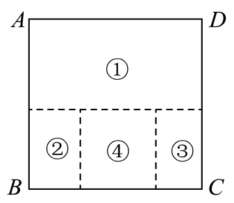

第三章 整式及其加减·培优卷
【北师大版2024】
考试时间：120分钟 满分：120分
姓名：___________班级：___________考号：___________
考卷信息：
本卷试题共24题，单选10题，填空6题，解答8题，满分120分，限时120分钟，本卷题型针对性较高，覆盖面广，选题有深度，可衡量学生掌握本章内容的具体情况！
第Ⅰ卷
一．选择题（共10小题，满分30分，每小题3分）
1．（3分）（24-25七年级上·甘肃兰州·期中）在式子n﹣3、a2b、m+s≤2、x、﹣ah、s＝ab中代数式的个数有（ ）
A．6个 B．5个 C．4个 D．3个
2．（3分）（24-25七年级上·北京·期中）下列各单项式中，与−2nm2是同类项的是（ ）
A．5mn B．2n2 C．3m2n D．mn2
3．（3分）（2025·浙江台州·二模）如果代数式x2−2x+5的值为3，那么代数式2x−x2的值等于（ ）
A．2 B．−2 C．8 D．−8
4．（3分）（24-25七年级下·甘肃甘南·期末）若x是一个实数，则3x+1和4x+1的大小关系为（ ）
A．3x+1>4x+1 B．3x+1<4x+1
C．3x+1≤4x+1 D．不确定
5．（3分）（24-25七年级上·广东广州·期末）在学习了整式的加减后，老师出了一道课堂练习题：
选择一个a值，求：5a2−ab+3ab−3a2−2ab−2a2+2035的值
甲说：“当a=0时，原式=2035”
乙说：“当a=1时，原式=2035”
丙说：“只选择一个a值，没有选择b的值，不能求出代数式的准确值”
丁说：“当a为任何一个有理数时，原式=2035”这四位同学中，谁的说法是错误的？（ ）
A．甲 B．乙 C．丙 D．丁
6．（3分）（2025·云南昆明·三模）按一定规律排列的代数式：1+x2，3+x3，5+x4，7+x5，…，第n个代数式是（ ）
A．2n−1+xn+1 B．2n−1+xn C．2n+1+xn+1 D．2n+1+xn
7．（3分）（24-25七年级上·湖南郴州·期中）某月的月历表如图所示，任意圈出一横行或一竖列相邻的三个数，三个数的和不可能是（ ）

A．24 B．36 C．50 D．60
8．（3分）（24-25七年级上·广东惠州·期中）无论x,y取何值，多项式2x2+ax−4y+1−2x2+3x−by−4的值不变，则（ ）
A．a=6，b=2 B．a=2，b=6 C．a=−6，b=−2 D．a=6，b=−2
9．（3分）（2025·河北唐山·二模）如图，嘉淇将一正方形纸片ABCD裁剪成①，②，③，④四块，其中①～③是三块小矩形，④是一块小正方形．若已知矩形②和③的周长和为20，则正方形ABCD与正方形④的周长和为（ ）

A．20 B．30 C．35 D．40
10．（3分）（24-25七年级下·广东广州·期末）甲、乙两名同学各提一个水桶在同一个水龙头前打水．如果甲打满一桶水需要41+a2分钟，乙打满一桶水需2a2+1分钟，要使两人都打满一桶水所用时间和（包括等待时间）最少，应如何安排？（ ）
A．安排甲先打水 B．安排乙先打水
C．甲、乙的打水顺序不影响总时间 D．无法确定
二．填空题（共6小题，满分18分，每小题3分）
11．（3分）（24-25七年级下·四川雅安·期中）多项式3xm−4−5x−m是关于x的四次三项式，则m的值是 ．
12．（3分）（24-25七年级上·江西南昌·期中）某商品进价是a元，先按进价提高100元定价，后又按定价的8折出售，则该商品的售价为 元．（用含a的式子表示）
13．（3分）（24-25七年级上·黑龙江齐齐哈尔·期中）已知多项式A、B，其中B=5x2+3x−4，马小虎同学在计算“A+B”时，误将“A+B”看成了“A−B”，求得的结果为12x2−6x+7，则多顶式A为 ．
14．（3分）（24-25七年级上·山东滨州·期末）已知m−14+n+0.5=0，则43m2n−mn2−23mn2−m2n−14m2n= ．
15．（3分）（24-25七年级上·福建莆田·期中）如果整式A和整式B的和为一个常数a，我们称A、B为常数a的“和谐整式”．例如：2x−7和−2x+6为数−1的“和谐整式”．若关于x的整式9x2+mx+6与−nx2−3x+2m−n为常数k的“和谐整式”．则常数k的值是 ．
16．（3分）（24-25七年级上·北京·期中）如图是用棋子摆成的图案，按照这样的规律摆下去：

摆成第⑤个图案需要棋子的个数为 ；
摆成第n个图案需要棋子的个数为 ；
第Ⅱ卷
三．解答题（共8小题，满分72分）
17．（6分）（24-25七年级上·北京·期中）化简：
(1)2x2−5x+x2+4x
(2)a3−2a2+1−23a2−2a+12
18．（6分）（24-25七年级上·甘肃兰州·期中）已知A=3x2+xy+y，B=2x2−xy+2y
(1)化简2A−3B；
(2)若|x−2|+(y+3)2=0，求2A−3B的值．
19．（8分）（24-25七年级上·陕西宝鸡·期中）已知关于x、y的单项式2ax3yn与3bx2m−3y5的和是单项式．
(1)求8m−n22的值；
(2)已知其和（关于x、y的单项式）的系数是2，求2a+3b−32024．
20．（8分）（24-25七年级上·安徽合肥·阶段练习）对于多项式n−1xm+2−3x2+2x（其中m是大于−2的整数）．
(1)若n=2，且该多项式是关于x的三次三项式，求m的值；
(2)若该多项式是关于x的五次三项式，则m、n要满足什么条件？
21．（10分）（24-25七年级上·贵州六盘水·期末）已知关于x的多项式M和N，其中M=(a+2)x2+(b−1)x−3（a,b为常数），N=5x2−3x．
(1)若多项式(a+2)x2+(b−1)x−3中不含x2项，求a的值；
(2)当a=3,b=−2时，求3M−N；
(3)在（2）的条件下，若−5x2+3x+4=0，求3M−N的值．
22．（10分）（24-25七年级上·安徽合肥·期中）已知两种商品A，B，商品A成本价为a元，提高20%后出售，商品B亏本20%后售价为a元．
(1)用代数式表示商品A的售价_____元，商品B的成本价_____元，
(2)若出售了m件商品A和100−m件商品B，则用代数式表示一共盈亏多少元（结果化简）？
(3)在（2）的条件下，说明a=500，m=60时的盈亏情况．
23．（12分）（24-25七年级上·河北保定·期末）嘉嘉准备完成题目：化简⊕x2+3x+7−3x−35x2+1，发现系数“⊕”印刷不清楚．
(1)他把“⊕”猜成2，请你化简：2x2+3x+7−3x−35x2+1；
(2)妈妈对嘉嘉说：“你猜错了，我看到标准答案的结果是一个常数．”请你通过计算说明原题中的“⊕”是几．
24．（12分）（2025六年级下·全国·专题练习）如图是某一长方形闲置空地，宽为3a米，长为b米．为了美化环境，准备在这个长方形空地的四个顶点处分别修建一个半径a米的扇形花圃（阴影部分），然后在花圃内种花，中间修一条长b米，宽a米的小路，剩余部分种草．

(1)小路的面积为 平方米；种花的面积为 平方米；（结果保留π)
(2)请计算该长方形场地上种草的面积；（结果保留π)
(3)当a=2，b=10时，请计算该长方形场地上种草的面积．(π取3.14，结果精确到1)